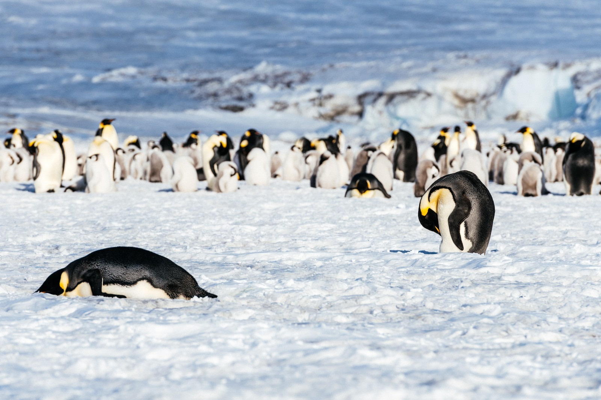
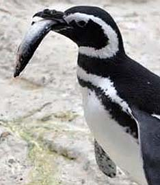
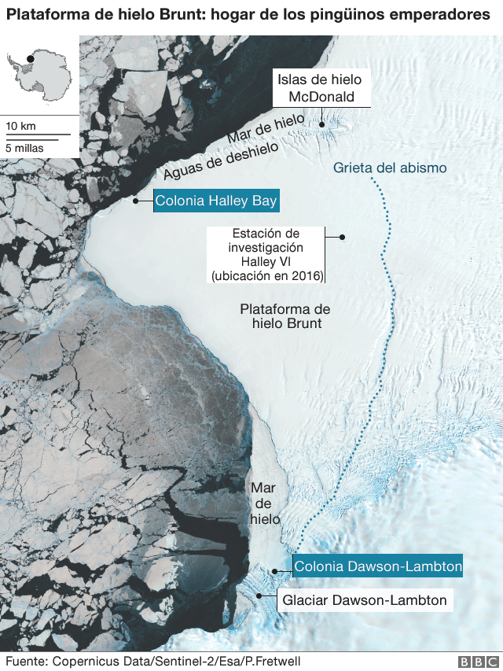

Habitat
Estas aves, incapaces de volar, viven en los hielos antárticos y en las gélidas aguas que los rodean
Estado de Conservacion
Casi Amenazado debido a los cambios climaticos en los ultimos años.
Alimentacion
peces pequeños, calamares y crustaceos
Reproduccion
Se reproduce tanto en los tempanos de hielo cerca de la costa, o en la propia costa, como hasta 200 kms. al interior del continente helado.
Ubicacion Geografica
Tabla con tipos de Pinguinos
| Nombre | Nombre Cientifico |
| Pinguino Real | Eudyptes schlegeli |
| Pingüino de Fjordland | Eudyptes pachyrhynchus |
| Pingüino de las Galápagos | Spheniscus mendiculus |
| Pingüino de Humboldt | Spheniscus humboldti |
| Pingüino rey | Aptenodytes patagonicus |
| Pingüino pequeño azul | Eudyptula minor |
| Pingüino de penacho amarillo austral | Eudyptes chrysocome |
| Pingüino de Adelia | Pygoscelis adeliae |
| Pingüinos africanos | Spheniscus demersus |
| Pingüino magallánico o pingüino del sur | Spheniscus magellanicus |
| Pingüino barbijo | Pygoscelis antarcticus |
| Pingüino de penacho amarillo norteño | Eudyptes moseleyi |
| Pingüino de ojos amarillos | Megadyptes antipodes |
| Pingüino de las Islas Snares | Eudyptes robustus |
| Pingüino macaroni o pingüino de penacho anaranjado | Eudyptes chrysolophus |
| Pingüino juanito o pingüino papúa | Pygoscelis papua |
| Pingüino de las Antípodas | Eudyptes sclateri |
| Pingüino de patas blancas | Eudyptula albosignata |